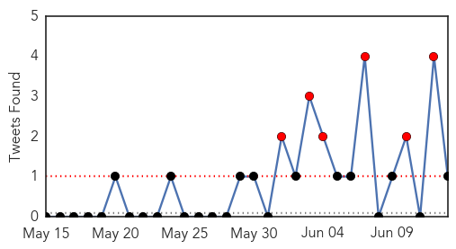

30 Day Trends
Web: 23 alerts, 2 warnings
Twitter: 14 alerts, 1 warnings
Top Articles:
- 1.000
- Explainer: A MERS outbreak has killed 14 in South Korea. What are the experts saying?
- 1.000
- A MERS outbreak has killed 14 in South Korea. What are the experts saying?
- 1.000
- Embassy in Saudi says Pinoy has MERS virus
- 1.000
- Modern Healthcare Modern Healthcare business news, research, data and events
- 1.000
- Mers virus kills 14 in South Korea
- 1.000
- Another OFW gets deadly MERS virus
- 1.000
- 2 South Korean hospitals shut over MERS fears; 13th person dies
- 1.000
- WHO Experts Downplay MERS Threat In South Korea As Death Toll Rises To 14
- 0.999
- 7 New MERS Cases Raise S. Korea's Total to 145
- 0.998
- Kingdom, South Korea see no MERS letup
- 0.998
- WHO calls emergency meeting on "large, complex" S. Korea MERS outbreak
- 0.998
- WHO says South Korea’s MERS outbreak large and complex
- 0.998
- WHO calls emergency meeting on "large, complex" South Korea MERS outbreak
- 0.998
- WHO recommends continuation of strong disease control
- 0.998
- S. Korea, WHO experts downplay pandemic potential of MERS
- 0.998
- South Korea can expect more cases says WHO
- 0.998
- Governor's office acts to dispel rumors of MERS on Guam
- 0.998
- WHO calls emergency meeting on "large, complex" S. Korea MERS outbreak
- 0.998
- WHO Says South Korea's MERS Outbreak Large And Complex
- 0.997
- South Korea’s MERS outbreak should be wake-up call for world: WHO expert
- 0.997
- South Korea MERS Outbreak 2015, Death Toll & News Updates
- 0.997
- WHO calls meeting on Korea’s Mers outbreak
- 0.997
- World Health Organization calls emergency meeting on ‘large, complex’ South Korea MERS outbreak
- 0.997
- WHO Says MERS Spread Slowing as South Korea Reports 14th Death
- 0.997
- U.S. hospitals warned to be on lookout for MERS cases
- 0.996
- (6th LD) WHO says MERS in S. Korea 'large and complex'
- 0.996
- FUKUDA : WHO: South Korea's MERS Outbreak Large and Complex
- 0.994
- WHO calls emergency meeting on 'large, complex' South Korea MERS outbreak
- 0.994
- S Korea seals off two MERS hospitals
- 0.992
- Phuket on alert for MERS virus
- 0.991
- (5th LD) WHO says MERS in S. Korea 'large and complex'
- 0.987
- Civil Aviation Administration ...｜Society｜WCT
- 0.986
- SKorea cuts key rate as MERS emerges as threat to recovery
- 0.984
- Man hospitalized in Slovakia with suspected case of MERS
- 0.984
- OFW in Saudi Arabia tests positive for Mers
- 0.975
- MERS threat widens in South Korea
- 0.971
- SGGP English Edition- Korean man dropping dead tests negative for MERS
- 0.970
- Hospitals in Phl unprepared for possible outbreak
- 0.959
- Pinoy tests positive for MERS-CoV in Saudi
- 0.901
- SIA to waive cancellation fees for passengers with tickets to, from Korea
- 0.885
- Riyadh, Seoul to cooperate on fighting MERS virus
- 0.840
- Bratislava hospital tests South Korean man in suspected MERS case
- 0.766
- Police tracking down MERS suspect who checked out from Miri Hospital – BorneoPost Online
Top Tweets:
- 0.793
- RT: S. Korea - Coronavirus MERS Case List - 138 cases, 14 deaths, 11 health care workers https://t.co/PSJ37aKD5e
- 0.545
- AFD Blog `Saudi MOH: Another MERS Case In Hofuf ' MERS-CoV http://t.co/qkzvwxh8PV
- 0.528
- AFD Blog `Korea Trying Convalescent Serum Treatment For MERS' MERS-CoV http://t.co/tZGfYMzqcG
Web/News Articles
Tweets
Article Locations
Article Confidences